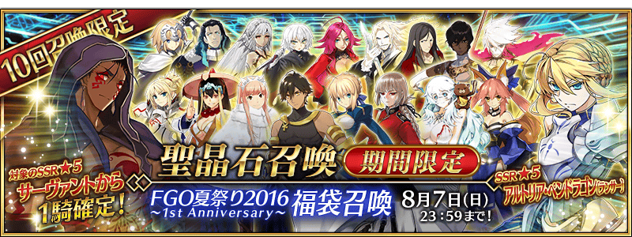
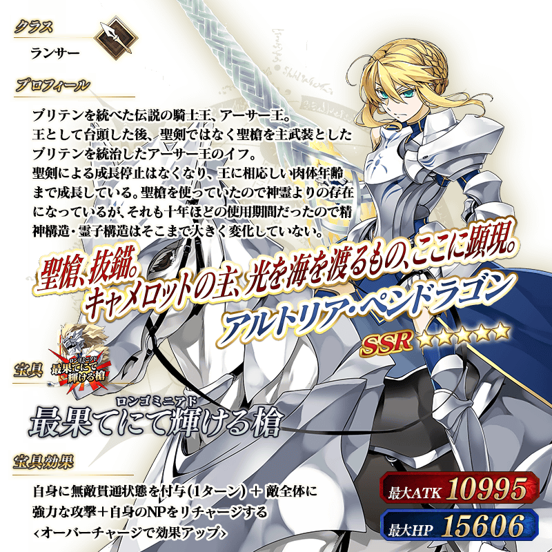

◆「FGO夏祭2016～1st Anniversary～福袋召喚」期間◆
期間：2016年7月29日(五) 23:00～8月7日(日) 22:59
以期間限定舉辦「FGO夏祭り2016～1st Anniversary～福袋召喚」！
福袋召喚為確定1位★5(SSR)Servant的10次召喚！
只有Saber、Archer、Lancer、Ruler職階為召喚對象的「三騎士+EXTRA召喚」、只有Rider、Assassin、Caster、Berserker的職階為召喚對象的「四騎士召喚」、2種類的福袋召喚只能選擇1個。
※「三騎士+EXTRA召喚」或「四騎士召喚」不管哪邊一人僅限1次。
※能用有償聖晶石30個召喚。無法用無償聖晶石召喚。
※聖晶石購入時給予的「額外(オマケ)」為無償聖晶石。
由於不包含在有償聖晶石的個數中，請注意有無搞混。
另外，所持聖晶石的細目，可從所持道具一覧確認。
詳情請在聖晶石召喚畫面左下的召喚詳細確認。
★5(SSR)Servant1位確定，★4(SR)以上1枚確定，另外★3(R)以上的Servant1位確定！
※★4(SR)以上確定包含Servant和概念禮裝。
◆「三騎士+EXTRA召喚」對象★5(SSR)Servant◆

| 職階 | 稀有度 | Servant |
|---|---|---|
| Saber | ★★★★★ | 阿爾托莉亞・潘德拉剛 |
| Saber | ★★★★★ | 阿提拉 |
| Saber | ★★★★★ | 莫德雷德 |
| Archer | ★★★★★ | 俄里翁 |
| Archer | ★★★★★ | 尼古拉・特斯拉 |
| Archer | ★★★★★ | 阿周那 |
| Lancer | ★★★★★ | 迦爾納 |
| Lancer | ★★★★★ | 阿爾托莉亞・潘德拉剛 |
| Ruler | ★★★★★ | 貞德 |
※Pick Up期間中，尼古拉・特斯拉就算未通過第四特異點也能入手。另外，阿爾托莉亞・潘德拉剛(Lancer)就算未通過第六特異點也能入手。
※關於★4(SR)、★3(R)Servant，也只限Saber、Archer、Lancer的三騎士為召喚對象。
◆「四騎士召喚」對象★5(SSR)Servant◆
| 職階 | 稀有度 | Servant |
|---|---|---|
| Rider | ★★★★★ | 弗朗西斯・德雷克 |
| Rider | ★★★★★ | 女王梅芙 |
| Rider | ★★★★★ | 奧茲曼迪亞斯 |
| Assassin | ★★★★★ | 開膛手傑克 |
| Caster | ★★★★★ | 諸葛孔明〔埃爾梅羅II世〕 |
| Caster | ★★★★★ | 玉藻前 |
| Caster | ★★★★★ | 玄奘三蔵 |
| Berserker | ★★★★★ | 弗拉德三世 |
| Berserker | ★★★★★ | 南丁格爾 |
| Berserker | ★★★★★ | 庫・夫林〔Alter〕 |
※Pick Up期間中，女王梅芙、庫・夫林〔Alter〕就算未通過第五特異點也能入手。
※關於★4(SR)、★3(R)Servant，也只限Rider、Assassin、Caster、Berserker的四騎士為召喚對象。


